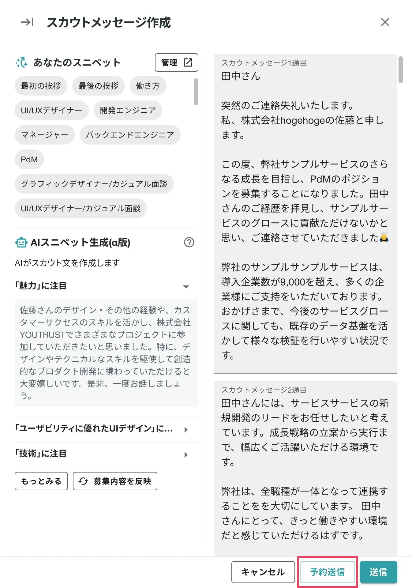
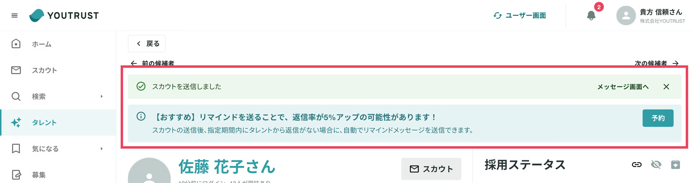
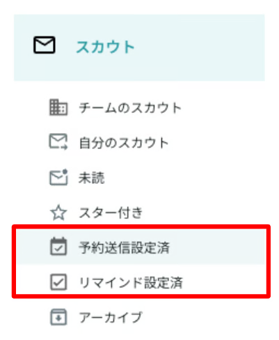
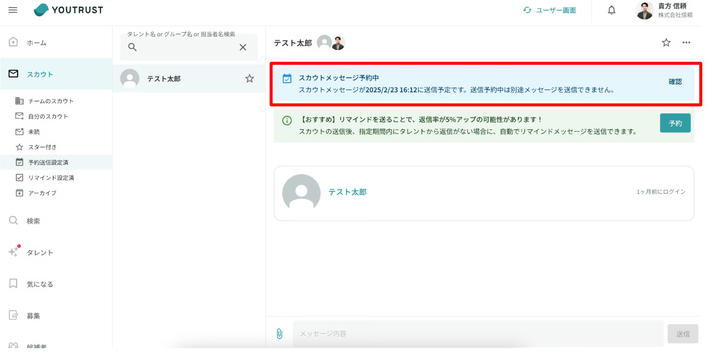
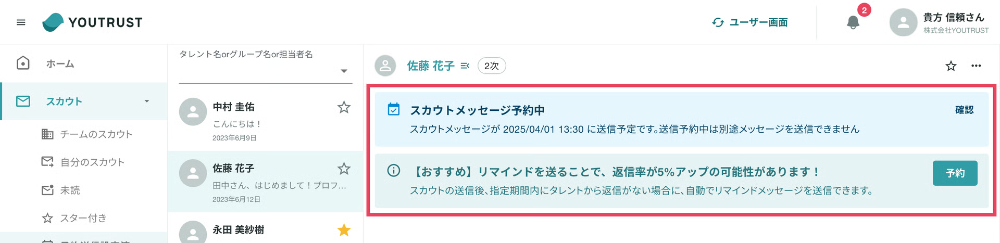
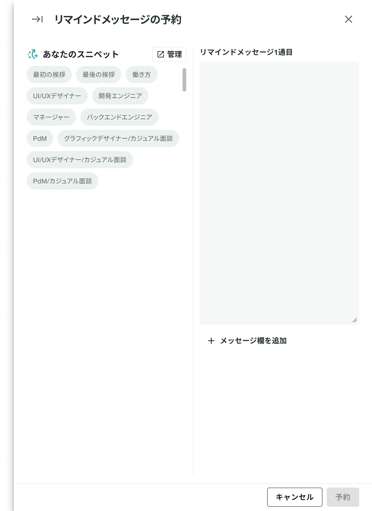
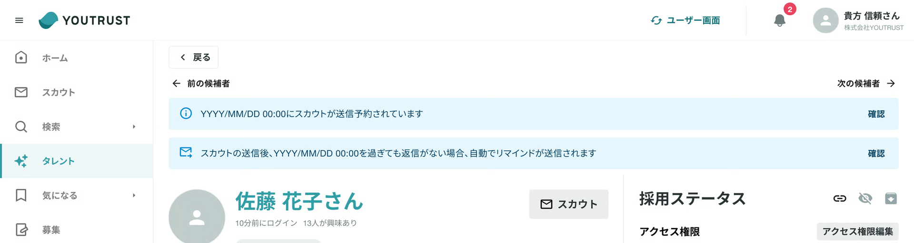
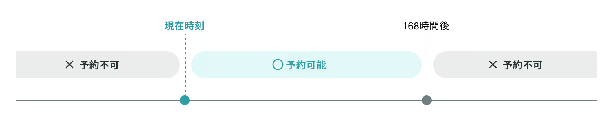
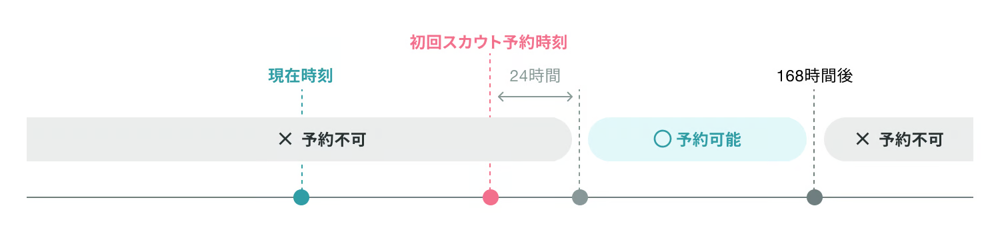
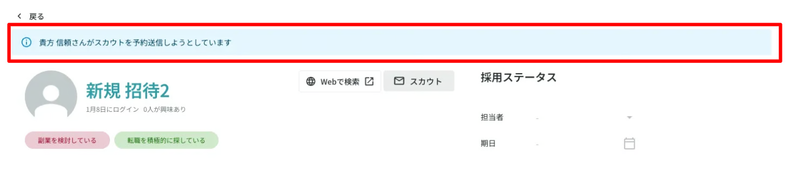

予約送信機能について知りたい¶
スカウト/リマインドの予約送信機能について¶
機能概要¶
予約送信とは任意の日時にスカウトやリマインドメッセージを予約し、その日時になった時点で送信が実行される機能です。
送信相手に配慮した日時に予約送信できたり、返信率を上げる工夫であるリマインド漏れをなくすことを期待しています。
初回スカウトの予約送信の登録動線¶
1. スカウト文章を作成¶
スカウト文章を作成後、「予約送信」をクリックします。

2. 予約送信をクリックし、送信日時を登録¶
送信日時を任意の時間に指定ができます。
最終確認はしっかりと行なってください
スカウト内容について弊社では一切の責任を負いかねます。

3. 予約送信の登録が完了¶
予約送信の登録が完了するとタレント詳細ページの上部に帯バナーが表示されます。

4. 登録された予約送信の確認が可能¶
管理画面の「スカウト」タブに「予約送信設定済」というフィルターを追加しています。
また管理画面のメッセージ内部に表示されている帯バナー「スカウトメッセージ予約中」の確認より予約送信されているメッセージの確認や削除が可能です。
  
5. 送信相手に予約されたメッセージが届く¶
任意の時間になると通常のスカウトと同様の見え方でスカウトメッセージが届きます。
注意
予約登録期間中に送信相手から返信があった場合は予約送信は実行されません

リマインドの予約送信の登録動線¶
1. 初回スカウトを送信するとリマインドの登録バナーが表示¶
初回スカウトを送信/予約送信するとタレント詳細ページの上部に帯バナーが表示されます。
こちらの帯バナー「【おすすめ】リマインドを送ることで、返信率が5%アップの可能性があります！」より「予約」をクリックするとメッセージルームに遷移して登録が可能です。

2. 登録バナーから予約をクリックするとリマインド登録が可能¶
初回スカウト送信と同じ形式のフォームからメッセージの登録が可能です。

3. リマインド予約送信の登録が完了¶
リマインドの予約送信が登録されると登録された旨とその送信日時が帯バナーとして表示されます。

4. 登録されたリマインド予約送信の確認が可能¶
管理画面の「スカウト」タブに「リマインド設定済み」というフィルターを追加しています。
また管理画面のメッセージ内部に表示されている帯バナー「スカウトメッセージ予約中」の確認より予約送信されているリマインドメッセージの確認や削除が可能です。
5. 送信相手に予約されたメッセージが届く¶
任意の時間になると通常のスカウトと同様の見え方でリマインドメッセージが届きます。
注意
予約登録期間中に送信相手から返信があった場合は予約送信は実行されません

6. メッセージタブからもリマインド予約送信の登録が可能¶

予約送信Q&A¶
予約送信されたメッセージの送信相手への見え方について¶
予約されたメッセージである旨は送信相手には伝わりません。通常のスカウトやリマインドメッセージと同様の見え方となります。
注意
予約送信を登録したタイミングから予約送信実行までの間に、送信相手のプロフィールが変更されることがございます。
予約送信機能の利用範囲について¶
予約送信機能を利用できるルームは下記の通りです。
| 対象ルーム | 予約送信可否 |
|---|---|
| スカウトルーム | ⭕️ |
| チャットルーム | ❌ |
| グループスカウトルーム | ❌ |
| グループチャットルーム | ❌ |
管理画面限定の機能のため、アプリもしくはスマートフォンブラウザより予約送信の登録はできません。アプリもしくはスマートフォンブラウザ側で予約送信が登録されていることは確認が可能です。
また予約送信の登録中は同じユーザーに他のメッセージ送信ができません。

予約送信が取り消される場合について¶
予約送信の実行を取り消すケースは下記の通りです。
下記に該当しない限り、予約送信が実行されます。
| 起きること | 予約送信の実行有無 |
|---|---|
| 予約送信を登録中の相手から返信があった場合 | 予約送信の実行を取り消す |
| スカウト送信権限がない | 予約送信の実行に失敗する。失敗した旨をWeb内通知/メールにてお知らせ |
| 送信相手にブロックされている | 予約送信の実行に失敗する。失敗した旨をWeb内通知/メールにてお知らせ |
| 自分に対してスカウトを実行 | 予約送信の実行に失敗する。失敗した旨をWeb内通知/メールにてお知らせ |
| つながり範囲外でありスカウト送信ができない | 予約送信の実行に失敗する。失敗した旨をWeb内通知/メールにてお知らせ |
| 有効な契約が終了している | 予約送信の実行に失敗する。失敗した旨をWeb内通知/メールにてお知らせ |
| スカウト通数が残っていない | 予約送信の実行に失敗する。失敗した旨をWeb内通知/メールにてお知らせ |
| リクルーターチームの切り替え | 予約送信の実行に失敗する。失敗した旨をWeb内通知/メールにてお知らせ |
登録している予約送信を削除したい¶
管理画面のメッセージタブから該当のルームにあるバナーの「確認」より予約送信の削除が可能です
注意
送信相手から返信があった場合は自動で取り消されます

予約送信を登録できる期間¶
予約送信を登録できる期間は下記の通りです。
| 前提条件 | 予約不可期間 | |
|---|---|---|
| 初回スカウト予約 | 同一ルームにリマインドが未設定 | 過去時刻、現在時刻から72時間より未来時刻 ※2025年12月24日（水）〜2026年1月4日（日）の期間中は、期間限定の仕様変更として 現在時刻から336時間（14日間）より未来時刻 |
| リマインド予約 | 同一ルームに初回スカウトが未設定 | 過去時刻、現在時刻から168時間より未来時刻 ※2025年12月24日（水）〜2026年1月4日（日）の期間中は、期間限定の仕様変更として 現在時刻から504時間（21日間）より未来時刻 |
| リマインド予約 | 同一ルームに初回スカウトが設定済 | 過去時刻、現在時刻から168時間より未来時刻 ※2025年12月24日（水）〜2026年1月4日（日）の期間中は、期間限定の仕様変更として 現在時刻から504時間（21日間）より未来時刻、初回スカウトよりも過去時刻、初回スカウトに対して24時間以内 |
※2025年12月24日（水）〜2026年1月4日（日）の期間中は、期間限定の仕様変更として、下記の通り設定可能な時間を変更いたします。
- 初回スカウト予約：現在時刻から336時間（14日間）以内 まで設定可能
- リマインド予約：現在時刻から504時間（21日間）以内 まで設定可能
初回スカウト予約可能時間¶

リマインド予約可能時間¶

リマインド予約可能時（初回スカウト設定済み）¶

他のリクルーターが予約送信の設定状況を確認する方法¶
自分以外のリクルーターが予約送信を設定している場合、そのタレント詳細ページにアクセスすると「〇〇さんがスカウトを予約送信しようとしています」と表記されます。

アプリもしくはスマートフォンブラウザ側で予約送信ルームに対してできること¶
アプリもしくはスマートフォンブラウザでは予約送信の有無の確認は可能ですが、予約送信の内容確認や削除はできません。